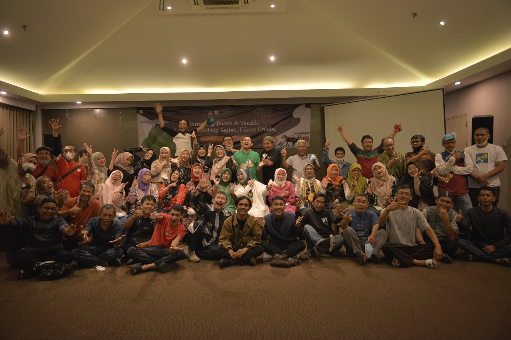

Hello World!
Saya Dini Nurmaulani, saat ini Saya berstatus sebagai mahasiswi prodi Sistem Informasi Universitas Widyatama
Saya tinggal di Bandung tepatnya di jalan Cikutra Barat
Saya bekerja sebagai Operator SIAKAD, menjalani study di Sistem Informasi merupakan pengalaman baru bagi saya.
Walaupun saya tidak pandai hari ini, saya harap di kemudian hari saya bisa menjadi
- mahir di bidang sistem informasi
- mempunyai keahlian yang baru
- bersyukur atas apa yang didapatkan di dunia

adalah nlalallalalalallalalllllllllllllllllllor import code from another repository
You can initialize this repository with code from a Subversion, Mercurial, or TFS project.
website prodi aku